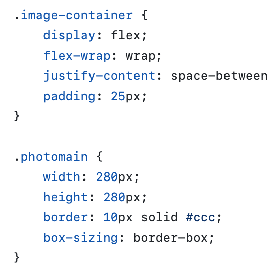
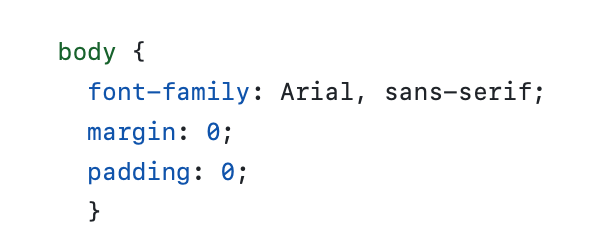

Тема, Мета, Місце розташування лаби №2
Тема: КАСКАДНІ ТАБЛИЦІ СТИЛІВ. СЕЛЕКТОРИ .ІДЕНТИФІКАТОРИ. СТИЛЬОВЕ
ОФОРМЛЕННЯ ТЕКСТОВИХ ЕЛЕМЕНТІВ В HTML-ДОКУМЕНТАХ.
Мета: придбати практичні навички роботи з селекторами, ідентифікаторами,
списками, різноманітними властивостями кольору і фону, зовнішними та
внутрішними відступами, плаваючими елементами, оформленням текстових
елементів.
Місце розташування лаби №2:
Cпособи підключення стилів
- Зовнішня таблиця стилів (External)
- Внутрішня таблиця стилів (Internal)
- Вбудований стиль (Inline)
Другий спосіб: тег style у head
Третій спосіб: у самому тезі є вбудований стиль style="color:blue;text-align:center;"
Селектори тегу

Селектори класу

Селектори ідентифікаторів
Інші селектори

CSS: Шрифти Текст Таблиці Фон Контур Списки
Шрифти: Таблиці Фон Контур Cписки
Висновки
В цій лабораторній роботі ми ознайомилися з CSS. Практикувалися зі стилями у самостійній роботі , додавали фон , межі , поля, кольори , контур. Всі ці знання примінили на проєктах, які почали робити на першій лабораторній роботі.